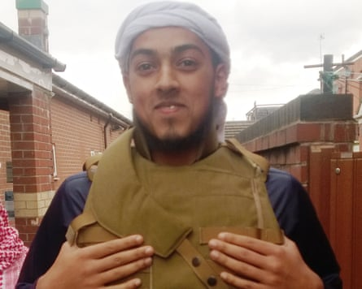

A “serious blunder” led to missed opportunities to disrupt a plot by Islamic State extremists to murder an imam in Greater Manchester, a public inquiry has found.
Jalal Uddin, 71, was bludgeoned to death with a hammer in a public park in Rochdale by Mohammed Kadir, then aged 24, because he practised a form of Islamic healing known as ruqyah that the terrorist group regarded as blasphemous and “black magic”.
Mohammed Syeedy.Photograph: Greater Manchester police/PA
Kadir, from Oldham, fled to Syria after the February 2016 killing. His getaway driver, Mohammed Syeedy, a former Manchester United steward, was later jailed for life for the murder. A third man, Mohammed Syadul Hussain, was jailed for five years for helping Kadir leave the UK days after the killing.
The public inquiry, chaired by Thomas Teague KC, involved both public and private “closed” hearings, to protect national security.
The public report, released before parliament on Thursday, found all three men had previously come to the attention of the police. It highlighted that Kadir was known to counter-terrorism police at the time of Uddin’s murder and had been identified as a person of high risk.
Although the need for a targeted police investigation into Kadir’s activities had been recognised by December 2015, the necessary steps including the appointment of a senior investigating officer (SIO) were not implemented.
The former detective inspector Frank Morris, who retired from Greater Manchester police (GMP) in 2021, told the inquiry an investigation into Hussain had been closed down prematurely two years before the murder.
The report said the failure to appoint an SIO led to two “missed opportunities”. The first was that Kadir’s Facebook posts of September 2015 might have been scrutinised by police; he had described imams like Uddin as “dirty kufr people” and vowed to “take this on” to “paralyse them”.
The report said the second missed opportunity was that other police investigative actions concerning Kadir might have detected and thwarted the murder plot.